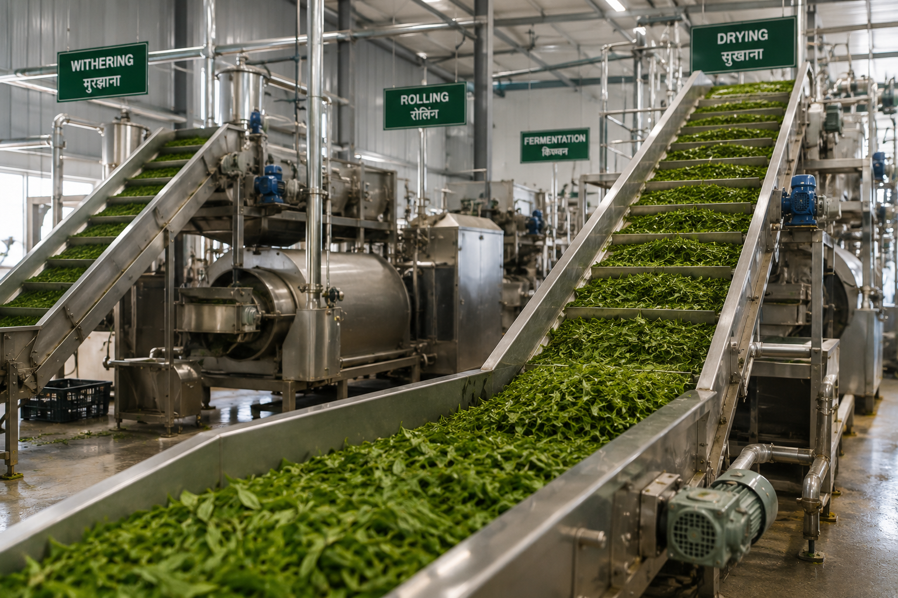
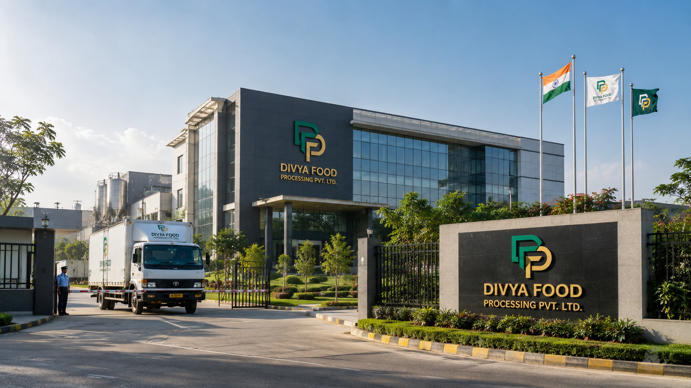
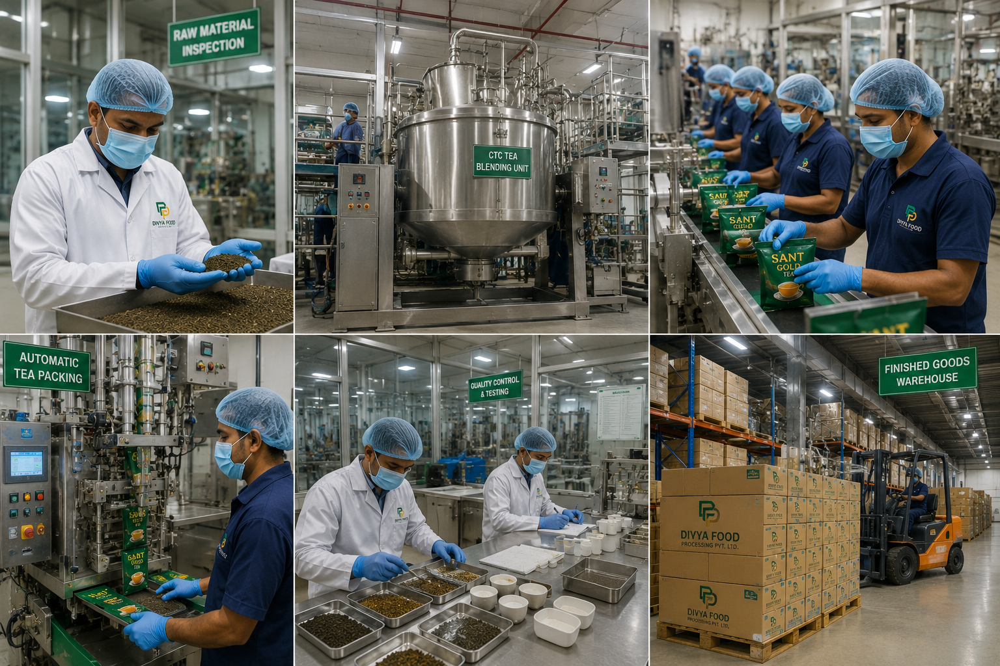
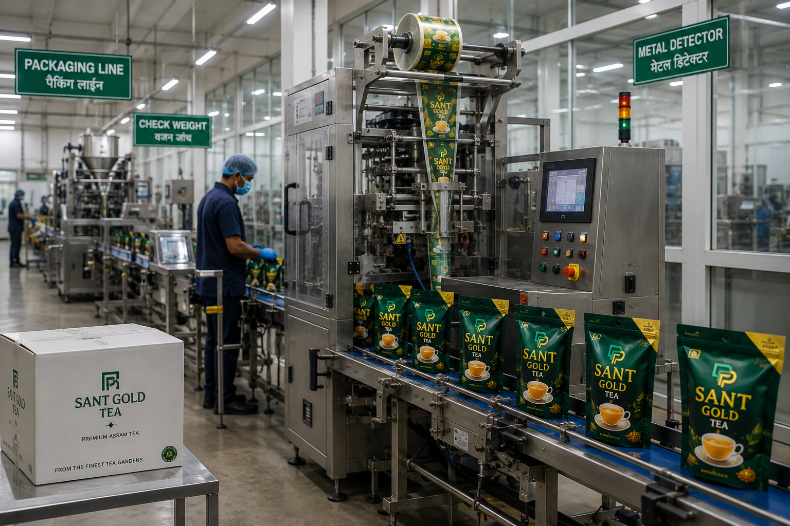
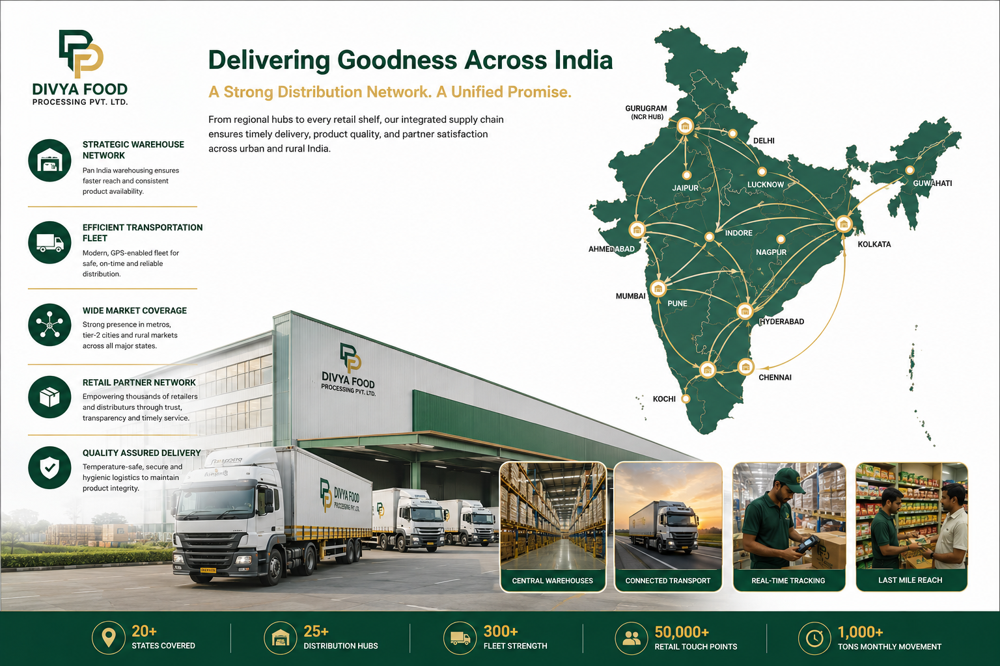
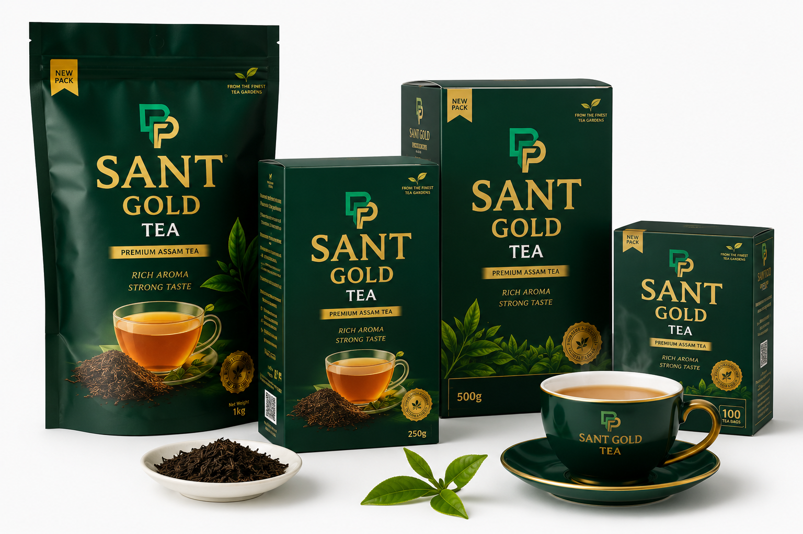

01
Tea Processing
Exploring sourcing, processing, quality management and product development frameworks for tea-based offerings.
Explore vertical →
Divya Food Processing Private Limited is an emerging food processing and FMCG company focused on tea processing, blending, packaging, private label opportunities and the development of future value-added food categories.

Our current strategy is centered on building a strong foundation for food processing, consumer product development, manufacturing partnerships, packaging and distribution-led growth.
View our business ecosystem →Processing and quality-focused development around the tea category.
Product profiles designed around future consumer and market requirements.
Packaging solutions that connect product quality with brand presentation.
Exploring scalable product solutions for retailers and commercial partners.

Divya Food Processing Private Limited was established with the objective of participating in India's evolving food processing and consumer goods sector.
The company is currently focused on strategic planning, business development, brand creation, partnership exploration and evaluating opportunities across manufacturing, distribution and consumer products.
Our business framework brings together processing, product development, packaging, private label and distribution opportunities under one long-term vision.

Exploring sourcing, processing, quality management and product development frameworks for tea-based offerings.
Explore vertical →
Developing packaging and customized product opportunities for future consumer and institutional requirements.
Explore vertical →
Evaluating distribution-led opportunities designed to support future brand reach and category expansion.
Explore vertical →Sant Gold Tea represents the company's focus on creating thoughtfully positioned tea products with a strong emphasis on quality, presentation and consumer trust.
The brand direction is part of a broader objective to build recognizable consumer offerings within the food and FMCG space.
Explore Our Brand Vision
Our long-term approach is designed around capability building, partnerships, market development and responsible expansion into value-added food categories.
Build the strategic, operational and brand foundations.
Develop processing, packaging and manufacturing relationships.
Develop focused consumer and private label product opportunities.
Explore distribution and brand-building opportunities across India.
Evaluate adjacent value-added food categories over time.
Connect with Divya Food Processing to discuss business opportunities, manufacturing relationships, private label requirements and strategic partnerships.